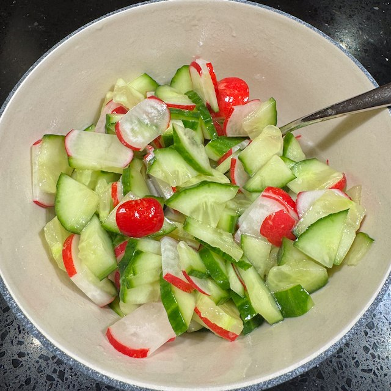

Serves: 4 as a side
Cook Time: 10 min
Cucumber and Radish Pickle

I normally make this as a side with Chicken Katsu Curry
Ingredients
- 1 tbsp rice wine vinegar
- 1 tbsp sesame oil
- ½ tsp caster sugar
- 6 radishes, topped tailed and thinly sliced
- ½ cucumber, thinly sliced rectangular
Method
Whisk the oil, vinegar and sugar until the sugar is dissolved.
Add the radish and cucumber, and mix.
Leave to pickle for 15-30 min while you make the rest of the meal.